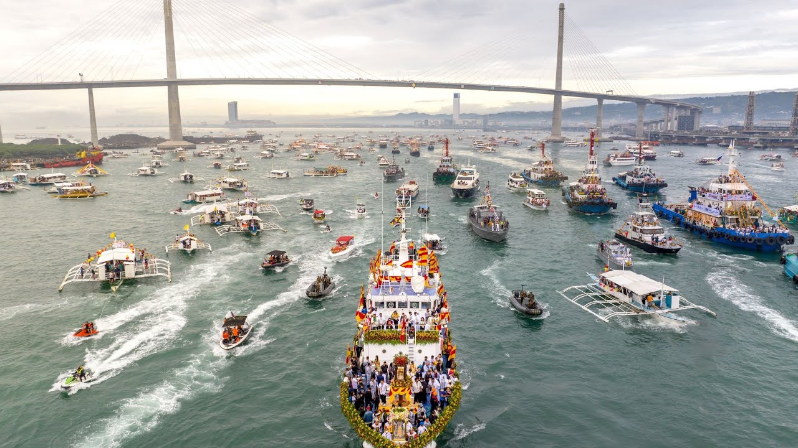
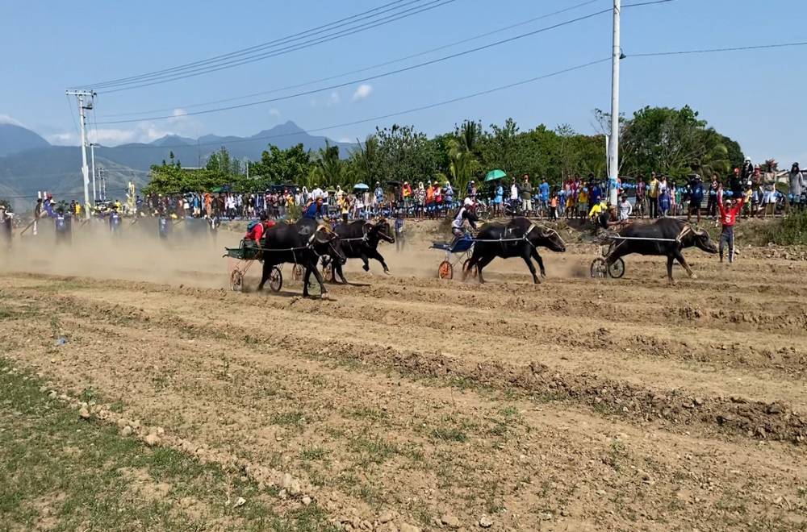
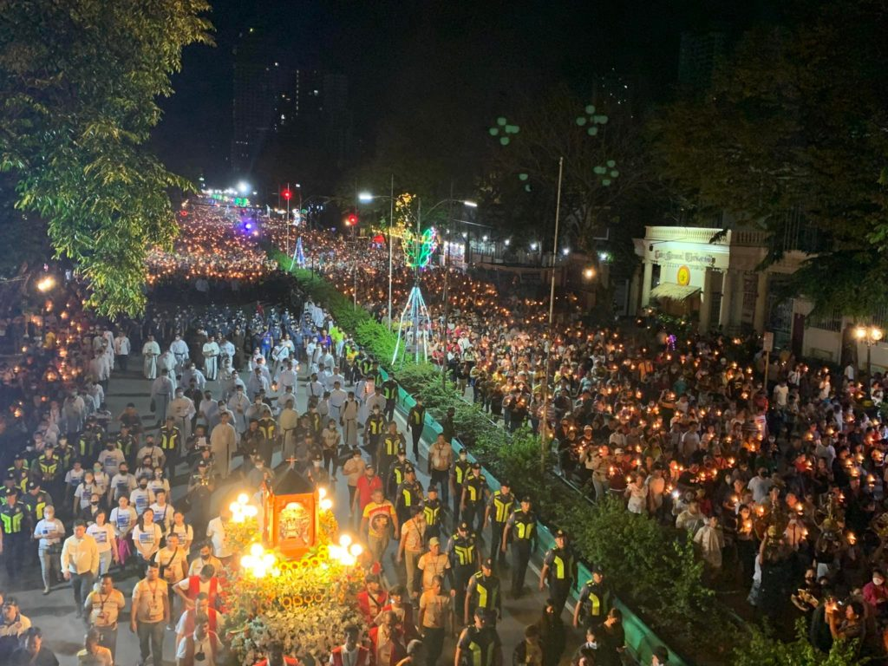
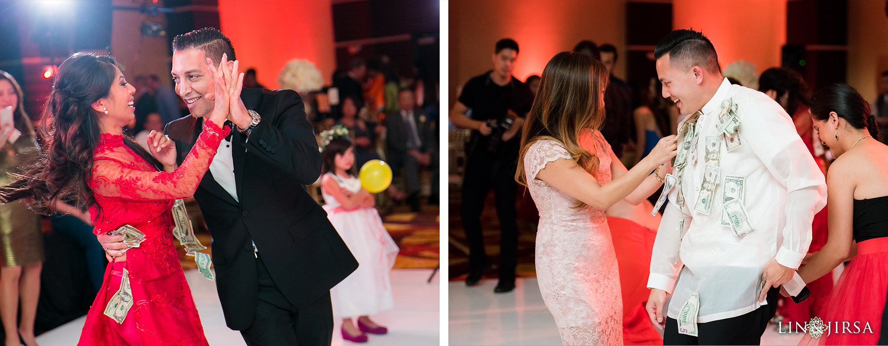

Part of the famous Sinulog Festival in Cebu City, this fluvial parade honors the Santo Niño. Boats carrying images of the Santo Niño are paraded along the river or coastal areas, accompanied by street dancing and cultural performances.

Carabao Racing is a popular rural tradition in Cebu during town fiestas. Farmers race their carabaos in muddy tracks as part of local festivities, showing both skill and friendly competition.

Nearly every town in Cebu celebrates its fiesta in honor of its patron saint. This includes religious processions, street dancing, food celebrations featuring Cebu lechon, and community gatherings.

Traditional Cebuano weddings include customs such as dowry, serenades, and dances. These practices highlight the strong family and social values in Cebuano culture.